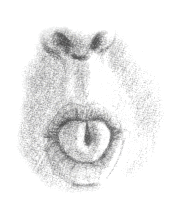

1. Curl your tongue as in the illustration below:

2. Inhale through your tongue, keeping it curled
3. Close your mouth and hold your breath for a count of 5-10 [whichever is comfortable].
4. Then, exhale slowly through your nose
The above constitutes one round.
______________________________________
Reverse Sithali from Azazel
1. Inhale through your nose.
2. With your mouth closed, hold your breath for a count of 5-10 [whichever is comfortable, the hold is optional].
3. Curl your tongue as in the illustration above.
4. Then, exhale through your mouth with your tongue curled
The above constitutes one round.
© Copyright 2009, 2013, 2018, Joy of Satan Ministries;
Library of Congress
Number: 12-16457
BACK TO SATANIC POWER MEDITATION MAIN PAGE